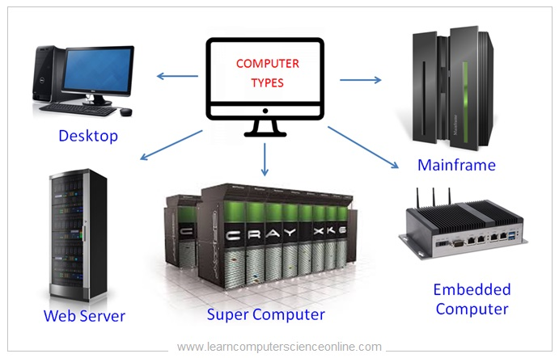
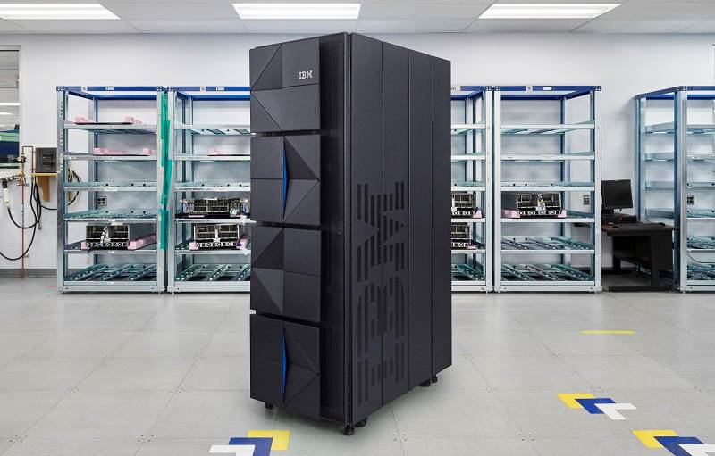
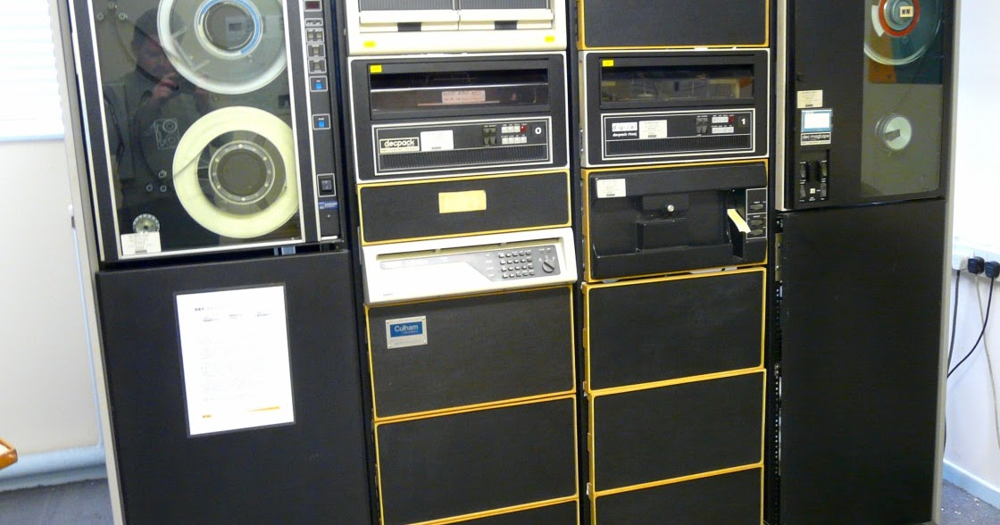
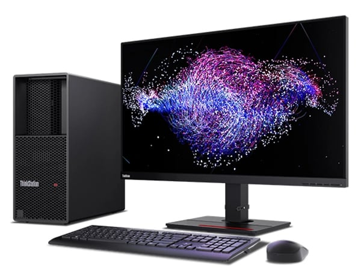

Types of Computers
The word “computer” once meant a person who did computational work, but now, the term now refers to electronic machinery or device that stores, inputs, processes, and outputs information. The work of a computer involves processing data to output information. They carry out arithmetic sequences or logical operations automatically by way of programming. Nowadays, modern computers are able to carry out a wide range of tasks.
There are multiple types of computers. Different types are used to cater to different
purposes. The computer types are categorized on the bases of size and data
handling capabilities. Below is a list of the different types of computers, an example
and their specfications
1. Supercomputer
Supercomputers are the biggest and fastest computers in terms of processing speed of data. They are designed in a way that allows them to process a large amount of data. Supercomputers can calculate up to ten trillion individual calculations per second. Their performance is measured using floating point operations per second (one floating-point operation is a mathematical calculation). Although some supercomputers are single computer systems, most are composed of multiple high performance computers working in parallel as a single system. These types of computers are used in scientific and engineering applications.

| Name | Frontier Supercomputer (HPE Cray) |
| Build | 74 cabinets each at 8000 pounds, 372 sq. m. |
| CPU | AMD EPYC 64-core CPUs and AMD Instinct MI250X GPUs |
| Memory | 9.2 petabytes, (Half HBM, Half DDR4) |
| Processing Speed | 8 730 112 cores |
| Calculating Power | 1.1 exaFLOPS |
| Working Principle | Parallel Processing |
| Energy Consumption | up to 40 MegaWatts |
| Field of Use | Real-life simulations, accurate modeling |
2. Mainframe Computer
Mainframe computers are designed in a way to be able to support hundreds or thousands of users at the same time. It also supports multiple programs simultaneously and can execute different tasks and processes simultaneously. Like the supercomputer, this type of computer can also manage and process large amounts of data quickly. This type of computer is ideal for big organizations that generally deal with a high volume of data.
| Name | IBM z16 |
| Build | rack-mounted or multiframe (depends on configuration) |
| CPU | IBM Telum Processor, 7nm technology |
| Memory | 16 - 40TB |
| Processing Speed | 4.8 - 5.2GHz, 8-Core processing chip |
| Calculating Power | Up to 215,089 MIPS |
| Working Principle | Batch and real-time processing |
| Energy Consumption | Optimized for efficiency |
| Field of Use | Organizational, (financial, transactional) |
3. Mini Computer
A mini computer is a medium-size multiprocessing computer. This type of computer can support up to 200 users at a time, and can have two or more processors. minicomputers were typically used in a single department of an organization and often dedicated to one task or shared by a small group. Minicomputers generally had limited computational power, but they had excellent compatibility with various laboratory and industrial devices for collecting and inputting data.
| Name | DEC PDP-11 |
| Build | 74 cabinets each at 8000 pounds, 372 sq. m. |
| CPU | Mid-range outdated CPUs |
| Memory | Tens of GB’s |
| Processing Speed | Moderate |
| Calculating Power | Handles medium scale processes. |
| Working Principle | Multi User |
| Energy Consumption | Moderate |
| Field of Use | Scientific labs, nuclear plants |
4. Server
Servers are a type of computer that has been optimized to provide services to other computers over a network. Servers usually have powerful processors, a lot of memory and large hard drives. Unlike a laptop or a desktop computer, a server provides computer power through a network or over the internet. Companies use servers to provide, process, or track information and or data. Servers, like other computers, have the usual computer components, but they don't have dedicated displays. Instead, a single monitor is used to configure and control multiple servers. Servers can be categorized in terms of their purpose. A few examples include:
- Web server
- Application server
- Proxy server
- Game server
- Database server
| Name | Dell Poweredge |
| Build | Rack, Tower, or Modular |
| CPU | Intel Pentium, Intel Xeon (also uses AMD) |
| Memory | Varies (up to TB's) |
| Processing Speed | 8 730 112 cores |
| Calculating Power | |
| Working Principle | Multi-user & multitasking, Network-based |
| Energy Consumption | Moderate to high |
| Field of Use | Hosting, data centers (i.e. cloud), & web servers |
5. Workstations
A workstation is a desktop computer that has a more powerful processor, additional memory, high-end graphics adapters and enhanced capabilities for performing a special group of tasks. It is a single user computer designed for technical or scientific applications.
| Name | Lenovo ThinkStation |
| Build | Desktop size |
| CPU | Intel Core i9 |
| Memory | 16 - 512GB |
| Processing Speed | High |
| Calculating Power | High (as what is required for the purpose) |
| Working Principle | Single user, Interactive (Input & Output) |
| Energy Consumption | Moderate |
| Field of Use | Engineering, Design, Graphics rendering (Professional Use) |
6. Microcomputers
Better known as a personal computer (PC), this computer is the smallest in size among all types of computers. These computers are designed for personal work and applications. There are different types of personal computers, namely,
- desktop computers
- Tablets
- Smartphones
- wearable computers (smart watches)
- Laptops
- handheld computers
| Name | ASUS, HP, Lenovo |
| Build | can be Desktop, Laptop |
| CPU | Intel Core, AMD Ryzen, etc… |
| Memory | 2 - 32 GB (depending on specifications) |
| Processing Speed | 1 GHz - 5.5 GHz (depending on specifications) |
| Calculating Power | Basic computing |
| Working Principle | Single user, Interactive (Input & Output) Basic computing |
| Energy Consumption | Moderate |
| Field of Use | Personal Use |
References
- Britannica, T. Editors of Encyclopaedia (2024, March 19). microcomputer. Encyclopedia Britannica.
- Chandler, N. (2023, August 30). 10 Types of Computers, From Wearables to Supercomputers. howstuffworks.
- Lutkevich, B. (n.d.). personal computer (PC). TechTarget.
- Pottenger, W. Morton, Swaine, Michael R., Hemmendinger, David, and Freiberger, Paul A. (2024, August 31). computer. Encyclopedia Britannica.
- Types of Computers (2024, July 22). GeeksforGeeks.
- Types of Computers (n.d.). Javatpoint.
- Workstation or PC: How To Decide What Type of System Is Right For You (n.d.). Intel.
- Frontier.
- Hu, C. (2022, June 1). The new Frontier supercomputer will be the fastest in the world. PopularScience.
- Moss, S. (2022, March 30). Oak Ridge’s exascale ‘Frontier’ system named world’s most powerful supercomputer on Top500. DataCenterDynamics.
- BasuMallick, C. (2023, January 19). What is a Mainframe? Features, Importance, and Examples. Spiceworks.
- IBM z16.
- Stine, K. (2022). IBM z16 Technical Overview. IBM zSystems.
- Kanade, V. (2023, March 17). What Is a Server? Definition, Types, and Features. Spiceworks.
- Kirvan, P. & Posey, B. (n.d.). What is a Server?. TechTarget.
- PowerEdge Servers.
- Britannica, T. Editors of Encyclopaedia (2022, October 4). minicomputer. Encyclopedia Britannica.
- Workstations.
- Lenovo ThinkStation.